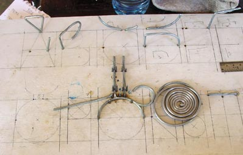
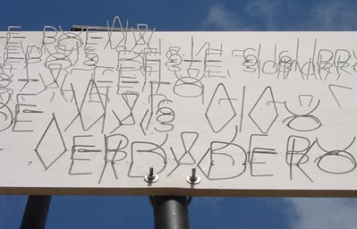
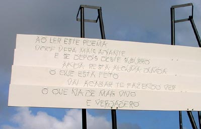
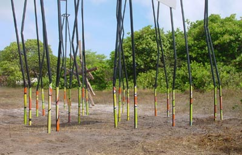

Travesía
a Punta do Seixas, 2001 Extremo Oriental de América: LUZ La escritura fija lo dicho. Fija la palabra dicha. La invención de la escritura lleva esta voluntad al extremo de modular y particionar el lenguaje a un número finito de caracteres: las letras como las unidades fonéticas (es decir, una invención que se origina en la sonoridad de las palabras, existen otras invenciones a partir de unidades de significado que generan ideogramas, como el chino mandarín, pero nuestra tradición es desde la sonoridad). Sonoridad para llegar a un irreductible: la letra, como el átomo del lenguaje occidental y arma un alfabeto con el mínimo de partes con un criterio de sintetización economicista. En las cartelas de Punta do Seixas no se fija lo legible, no se fija una lectura, se fija algo que es anterior, que la provoca. Se fijan los cuerpos opacos que arrojan la sombra de este contraste legible. Se fijan los elementos de una circunstancia luminosa, es la letra llevada a sus distintos trazos y horizontes; lo ilegible de la letra pero con potencia de legibilidad.  El criterio de sintetización economicista está presente en que este alfabeto se formula, ya no a partir de los 28 caracteres sino de los 9 trazos básicos que forman dichos caracteres, con lo que podemos llegar al verdadero irreductible, el trazo -gesto contrastado.  Las cartelas son legibles con la luz de la mañana, los trazos se van estirando y desarticulándose al subir el sol, al extremo de desaparecer; todo esto en un tránsito imperceptible del sol, que va desde la legibilidad hacia la ilegibilidad, desde el leer hasta el mirar, recomponiéndose cada mañana.  Desde el Atlántico hacia el continente la vista distingue ya otros horizontes, otros suelos. Desde el color podemos dar cuenta de una particularidad del lugar. Una voluntad de hacer discreto este umbral a partir del color. El color como un camuflaje, arreglo o síntesis cromática a partir de un catastro cromático del lugar: con el color del lugar se piensa un zócalo. de hacer discreta la llegada al suelo, suspendiendo las verticales, volviéndolas leves.  i.- primer momento: enmascarar en campo, la cara oriental de los tubos en su último tercio, el tercio del suelo. Luego dividir el campo en tres porciones blancas. Esto es a partir la invención de un ritmo para el zócalo y en vista del ritmo ya existente en la vertical que está quebrada en 3. ii.- segundo momento: Se cubren los campos con superficies de color: naranjo bermellón, amarillo y verde limón. Esta construcción espacial considera a cada vertical correspondida con su par, que están unidos en su coronación y su posarse en el piso: lo considera con un bastidor que tiene una tela invisible pero que tiende a construir, desde el color, una unidad a con este par. iii.- tercer momento: se pintan achurados cyan de 30 grados, con un pincel muy fino. Esto permite dos graduaciones luminosas del achurado: con una lineatura de 1 cm. y otra de 0.5 cms. Desde este contraste cromático se enrarecen la superficies brillantes de color. Esta construcción considera el total, ya no la sola vertical sino su conjunto y con ella conformar la construcción de este zócalo que tiene horizontes, prolongaciones y correspondencias de unas con otras. |